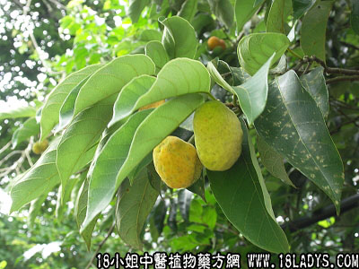

别名：狗果树。
植物名：桂木。
生长环境：本品为乔木。广州附近常栽培于村庄附近，作为风景树或果树。
分布：广东各地。
入药部分：果。
采集期：全年采根、秋采果。
自采地点：家种。
性味：性平、味酸、无毒。
功能：清热开胃、助消化、润肠。
主治、用量和用法：1、热咳、咳血：用干果5钱至1两、猪瘦肉适量，清水煎服；2、喉痛：用干果5钱至1两，清水煎服。
附录：（根）治热咳、咯血、大肠结热：用干根5钱至1两半，清水煎服。
参考资料：《中国药学大辞典》本品用作敛气止血、治吐血、衄血、金疮出血。
按：桂木原称“桂木”，要店俱售其果实入药，又可制凉果，桂目有红白两种，以白桂目为佳。
本文解释权归中药大全，本文地址：https://www.daquan.com/post/1609.html